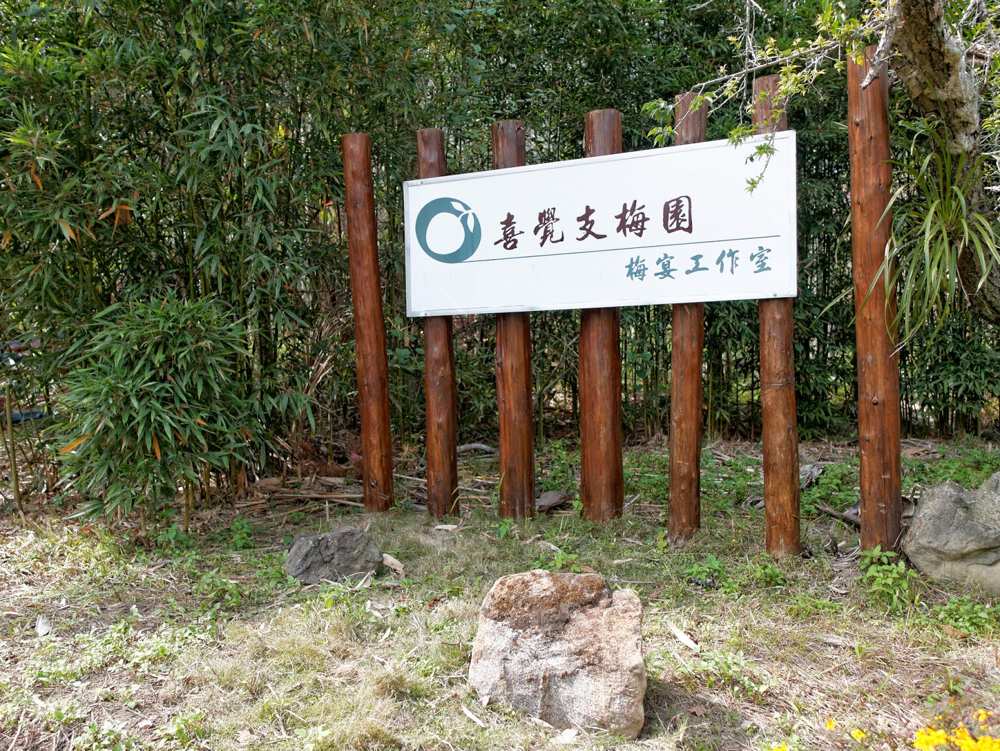
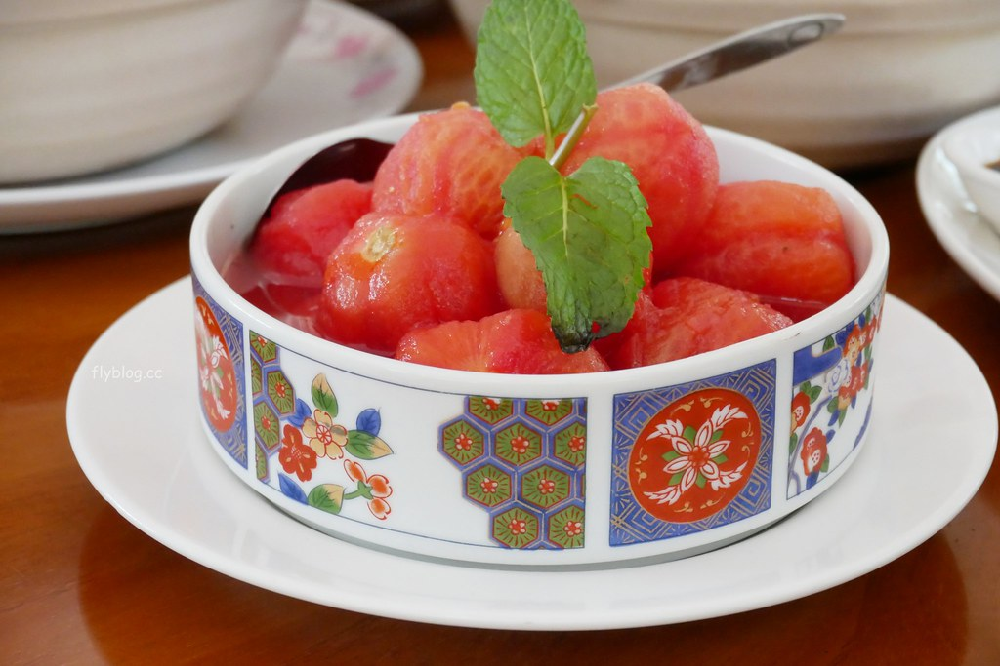
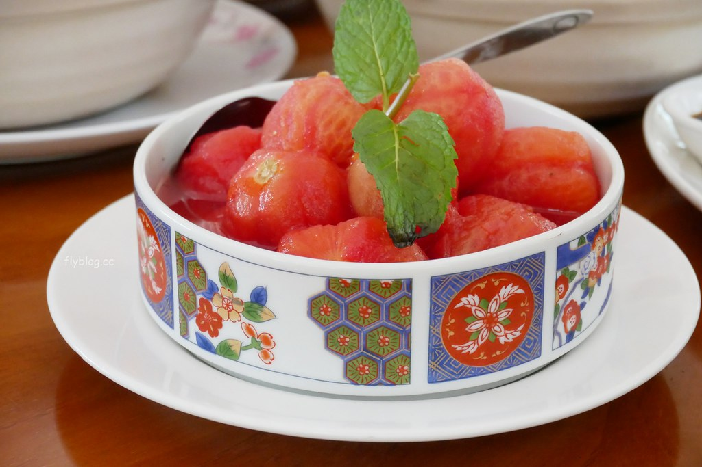

喜覺支梅園梅宴工作室
「喜覺支梅園梅宴工作室」是季節限定，位於南投信義鄉，只有梅花季節才推出，適逢賞梅季節，所以真的是有緣人才吃的到哦！
除此之外，老闆娘古老師曾獲台中區”經典美饌烹藝競賽”冠軍，也曾代表台中區參加”發展地方料理全國競賽”榮獲總冠軍等多項美食競賽獎項，廚藝非常受肯定，可以來這邊嚐嚐看!

地址: 南投縣信義鄉自強村陽和巷2號
連絡電話: (049)279-1115
「喜覺支梅園梅宴工作室」是季節限定，位於南投信義鄉，只有梅花季節才推出，適逢賞梅季節，所以真的是有緣人才吃的到哦！
除此之外，老闆娘古老師曾獲台中區”經典美饌烹藝競賽”冠軍，也曾代表台中區參加”發展地方料理全國競賽”榮獲總冠軍等多項美食競賽獎項，廚藝非常受肯定，可以來這邊嚐嚐看!

地址: 南投縣信義鄉自強村陽和巷2號
連絡電話: (049)279-1115